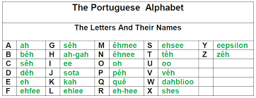
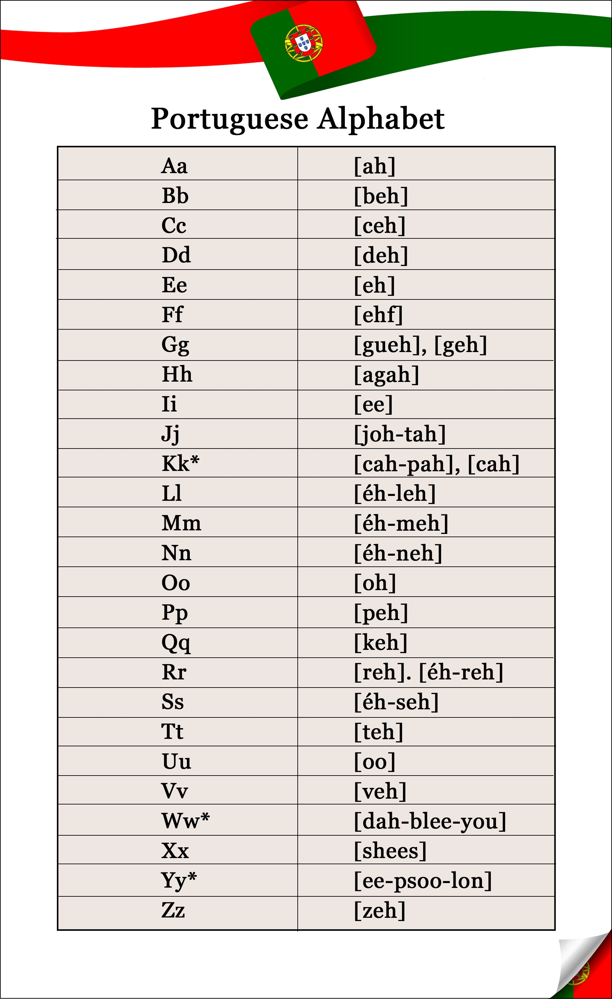

Notas da portuguess
Saludos formales
Bom dia- hasta las 12 de la mañana
Buenos días
Boa tarde - hasta las 6 de la tarde.
Buenas tardes
Boa noite - por la noche.
Buenas noche.
Saludos informales
Oi, tudo bem?
¡Hola!¿Qué tal?
Oi, como está?
¡Hola!¿Cómo está?
Bem vindo
Bienvenido
Respondiendo al saludo
Bom dia tudo bem?
Buenos días ¿cómo estas?
Estou.......
Estoy.......
Ótimo (estupendo)
Bem (bien)
Vou levando (voy tirando)
Mal (mal)
Terrível (fatal)

família de Luciano (B1)
Luciano tem oito anos e possui uma família que admira muito. Ele gosta de desenhar seus familiares
quando está de férias. Sua mãe chama-se Olívia e tem cabelos castanhos e longos. Ela gosta de assistir
novelas e cultivar um jardim de rosas brancas.
Douglas é o nome do pai de Luciano, que mora em outra casa. Eles se veem uma vez por semana e se
divertem bastante quando estão juntos. O garoto possui ainda duas irmãs: Alice e Aline. As garotas são
gêmeas e têm cinco anos. Elas gostam de brincar de bonecas e de jogar bola. O avô paterno de Luciano
tem 86 anos e chama-se Heitor. A avó paterna tem 85 anos e gosta de jogar xadrez com os netos. Ela se
chama Maria.
Rita e Olavo são os nomes dos avós maternos de Luciano. Eles têm 74 e 76 anos e moram em uma
cidade no interior do estado de São Paulo. Como o garoto mora no Rio de Janeiro, é preciso fazer uma
viagem para visitar esses avós. Os tios por parte do pai de Luciano chamam-se Ricardo e Antônia. Já por
parte de mãe, o garoto não possui tios. Ricardo é pai de Lucas e Gabriel, que são primos de Luciano. Sua
tia Antônia está grávida de um garoto que se chamará Leonardo e será o primo mais novo de Luciano.

As mudanças do tempo
Luma está lendo um livro sobre os diferentes tipos de climas que existem no planeta. Ela percebeu que o clima não é o mesmo em todos os lugares.
Em países da Europa, por exemplo, é muito comum que haja neve no inverno. No Brasil a neve é um fenômeno raro. Somente na região sul do país, onde o clima é muito mais frio do que nas outras regiões, é possível que neve.
Na África, Luma percebeu que há um calor muito forte. Existem lugares que são desertos e nessas áreas a água costuma ser escassa, pois chove muito pouco.
A garota também percebeu que no Brasil as estações primavera, verão, outono e inverno costumam ser bastante definidas, ou seja, em cada uma delas o clima costuma se comportar de uma forma própria.
Na cidade onde Luma mora, costuma ventar bastante, já que é uma região litorânea, mas em outros lugares ela descobriu que o vento não é tão frequente.
A região nordeste do país é uma das mais quentes e lá a chuva não ocorre de forma frequente, o que faz com que muitas pessoas procurem outras regiões para morar, como a região sudeste, por exemplo.
Na região sudeste brasileira o clima costuma sofrer algumas variações. As chuvas são abundantes e a falta de água é um acontecimento raro.
No norte do país o calor costuma ser intenso até mesmo nos meses de inverno. Já na região sul ocorre exatamente o contrário, pois o clima costuma ser frio até durante o verão
| PORTUGUÉS | ESPAÑOL |
|---|---|
| Olá. | Hola. |
| Oi. | Hola. |
| Bom dia. | Buenos días. |
| Boa tarde. | Buenas tardes. |
| Boa noite. | Buenas noches. |
| Até logo. | Hasta luego. |
| Até amanhã. | Hasta mañana. |
| Obrigado. | Gracias. |
| Obrigada. | Gracias. |
| De nada | De nada |
| Quero lhe apresentar o meu namorado | Quiero presentarte a mi novio |
| Muito prazer. | Mucho gusto. |
| Como vai você? | ¿Cómo te va? |
| Ótimo. | Muy bien. |
| Tudo bem. | Todo bien. |
| Tudo legal. | Todo legal. |
| O que é que há de novo. | ¿Qué hay de nuevo? |
| Nada, tudo velho. | Nada, todo igual. |
| Você fala português? | ¿Hablas portugués? |
| Falo sim. | Sí. |
| Não, não falo. | No. |
| A que horas a gente se encontra? | ¿A qué hora nos encontramos? |
| Às cinco da tarde. | A las cinco de la tarde. |
| Está combinado. | Ok, de acuerdo. |
| Como você se chama? | ¿Cómo te llamas? |
| De onde você é? | ¿De dónde eres? |
| Sou da Argentina, estou aqui tirando férias. | Soy de Argentina, estoy aquí tomando unas vacaciones. |
| Você está sozinho? | ¿Estás solo? |
| Você é casado? | ¿Estás casado? |
| Gosto muito de você. | Te quiero mucho/Me gustas mucho. |
| Você gosta de dançar? | Te gusta bailar? |
| Gosto sim. | Sí. |
| Vamos embora? | ¿Nos vamos? |
| Quero ir ao shopping comprar roupa | Quiero ir al shopping a comprar ropa. |
| Quanto é? | ¿Cuánto es? |
| Posso pagar com cartão de crédito? | ¿Puedo pagar con tarjeta de crédito? |
| Não, só à vista. | No, solo al contado. |
| Qual é o preço? | ¿Cuál es el precio? |
| Mas esse preço está errado. | Pero ese precio está equivocado. |
| Posso falar com o responsável? | ¿Puedo hablar con el responsable? |
| Não, agora ele não está. | No, ahora él no está. |
| Bom, vamos embora. | Bueno, vámonos. |
| Você está com fome? | ¿Tienes hambre? |
| Estou sim, estou com muita fome. | Sí, tengo mucha hambre. |
| Quer almoçar em um restaurante perto daqui? | ¿Quieres almorzar en un restaurante cerca de aquí? |
| Quero sim. | Sí. |
| Vamos lá! | ¡Vamos! |
| Será que tem estacionamento? | ¿Tendrá estacionamiento? |
| Acho que sim. | Creo que sí. |
| Também podemos pegar um táxi. | También podemos ir en taxi. |
| Mas eu prefiro ir de carro. | Pero yo prefiero ir con el auto. |
| ok, vamos de carro. | OK, vamos con el auto. |
| Quero um copo de água/vinho/refrigerante | Quiero un vaso de agua/vino/gaseosa |
| Quero suco de laranja/abacaxi/pêssego | Quiero jugo de naranja/ananá/durazno |
| Não tenho garfo/faca/colher/prato. | No tengo tenedor/cuchillo/cuchara/plato. |
| O que você me recomenda? | ¿Qué me recomienda? |
| Pode trazer o cardápio? | ¿Puede traerme la carta/el menú+B95? |
| Você faz traduções de português? | ¿Haces traducciones de portugués? |
| Faço, sim. | Sí. |
| Você é tradutora de português? | ¿Eres traductora de portugués? |
| Sou sim. | Sí. |
| Quer tomar um cafezinho ou prefere um chá? | ¿Quieres tomar un café o prefieres un té? |
| Prefiro um cafezinho. | Prefiero un café. |
| Hoje tem happy hour? | ¿Hoy hay after office (happy hour)? |
| Tem, sim. | Sí. |
| Vamos beber um chope? | ¿Vamos a tomar un chop? |
| Vamos, sim. | Sí. |
| Será que amanhã vai chover? | ¿Lloverá mañana? |
| Não sei. | No sé. |
| Nossa! Não gosto de chuva- | ¡Dios! No me gusta la lluvia. |
| Gosto é de sol. | Me gusta el sol. |
| Amanhã você tem uma reunião no escritório? | ¿Mañana tienes una reunión en la oficina? |
| Tenho, sim, às 8 horas da manhã, temos um encontro com o tradutor de português. | Sí, a las 8 de la mañana, tenemos una cita con el traductor de portugués. |
| Não se esqueça de levar sua pasta com os papéis do projeto. | No te olvides de llevar tu carpeta con los papeles del proyecto. |
| Não, não vou esquecer. | No, no me voy a olvidar. |
| O tradutor fica muito tempo no Brasil? | ¿El traductor se queda mucho tiempo en Brasil? |
| Não, apenas dois dias. | No, solo dos días. |
| Ele vai embora na sexta. | Se va el viernes. |
| Como se diz domingo em português? | ¿Cómo se dice domingo en portugués? |
| Qual é a pronúncia dessa palavra? | ¿Cómo se pronuncia esa palabra? |
| Está pronto? | ¿Estás listo? |
| Não sei. | No sé. |
| Não gosto disso. | Eso no me gusta. |
| Onde fica o banheiro? | ¿Dónde está el baño? |
| Tenho aula de português. | Tengo clase de portugués. |
| Hoje estou disponível. | Hoy estoy disponible. |
| Você dirige muito rápido. | Manejas muy rápido. |
| Estou zangado. | Estoy enojado. |
| Estou chateado. | Estoy molesto. |
| Estou cansado. | Estoy cansado. |
| Estou contente. | Estoy contento. |
| Estou com medo. | Tengo miedo. |
| Comprei dois ingressos para o show do Chico. | Compré dos entradas para el recital/show de Chico. |
| Estou passando mal, estou doente. | Me siento mal, estoy enfermo. |
| Pode tirar uma fotografía? | ¿Puede sacar una fotografia? |
| Gostaria de visitar a catedral? | ¿Le gustaría visitar la catedral? |
| A que horas começa o show? | ¿A qué hora comienza el show? |
| O ponto de ônibus fica longe? | ¿La parada de autobús queda lejos? |
| Gostaria de alugar um carro. | Me gustaría alquilar un coche. |
| Você já visitou o Pão de Açúcar? | ¿Ya visitaste el Pan de Açúcar? |